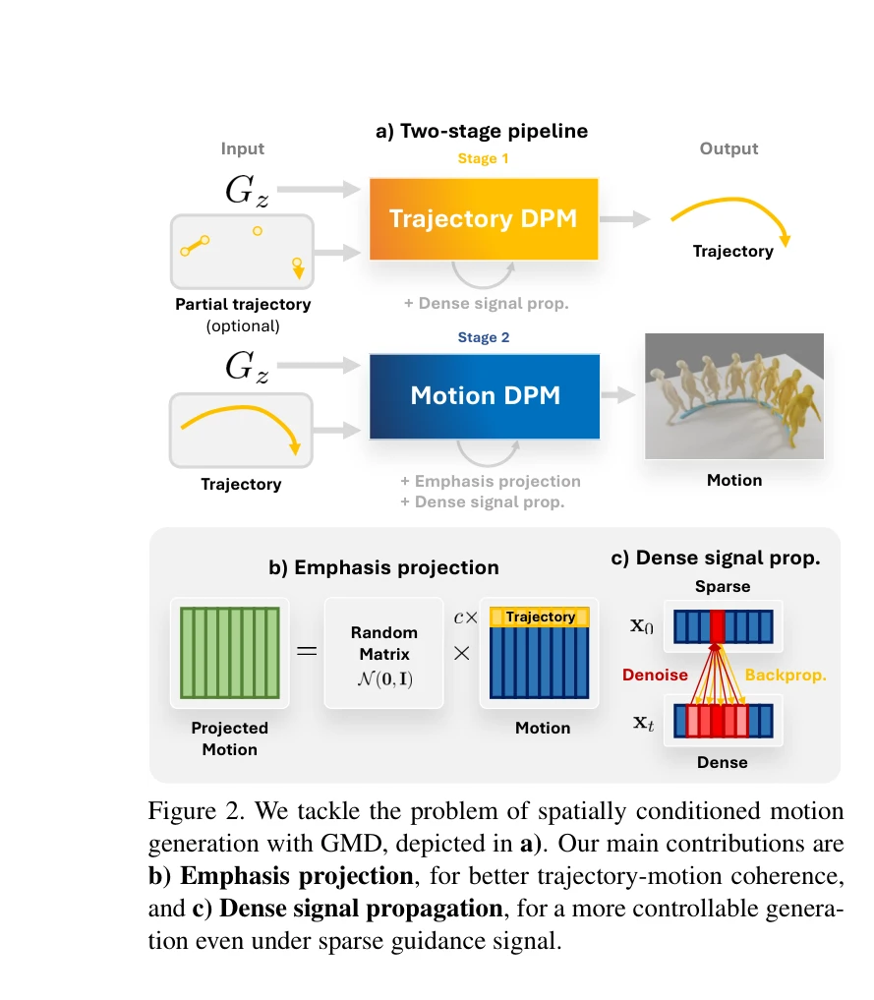
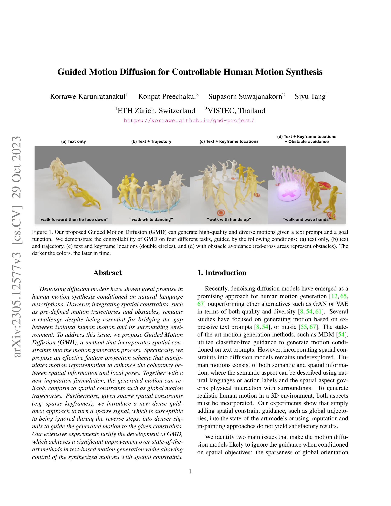

저자: Korrawe Karunratanakul, Konpat Preechakul, Supasorn Suwajanakorn, Siyu Tang | 날짜: 2023-05-21 | URL: https://arxiv.org/abs/2305.12577

Figure 2. We tackle the problem of spatially conditioned motion
Guided Motion Diffusion (GMD)는 자연어 설명과 공간적 제약(궤적, 키프레임, 장애물 회피)을 동시에 고려하여 인간의 모션을 합성하는 diffusion model 기반 방법을 제안한다.

Figure 1. Our proposed Guided Motion Diffusion (GMD) can generate high-quality and diverse motions given a text prompt a
Figure 2. We tackle the problem of spatially conditioned motion
총평: GMD는 모션 생성의 중요한 미충족 요구(공간적 제약 통합)를 새로운 관점에서 해결하며, emphasis projection과 dense signal propagation이라는 두 가지 우아하고 일반적인 기법으로 강력한 성과를 달성한 고품질의 논문이다.